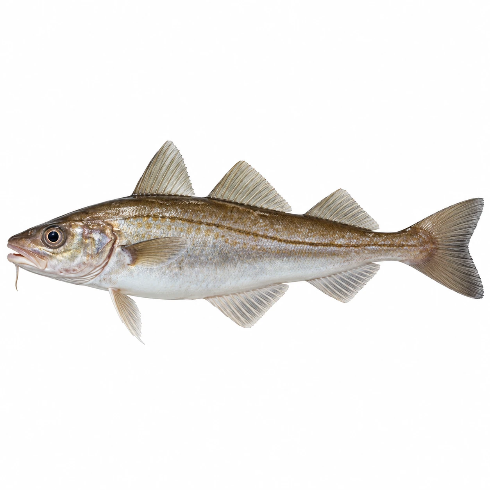
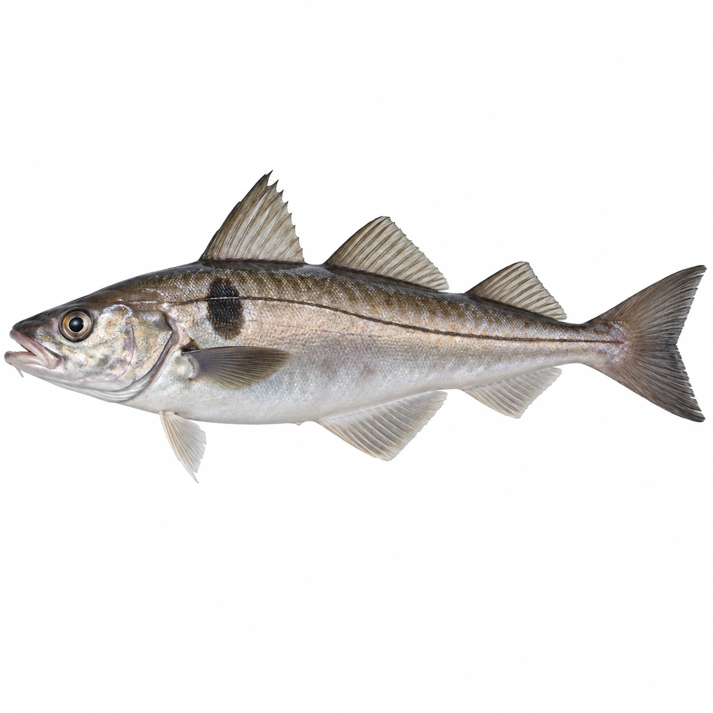
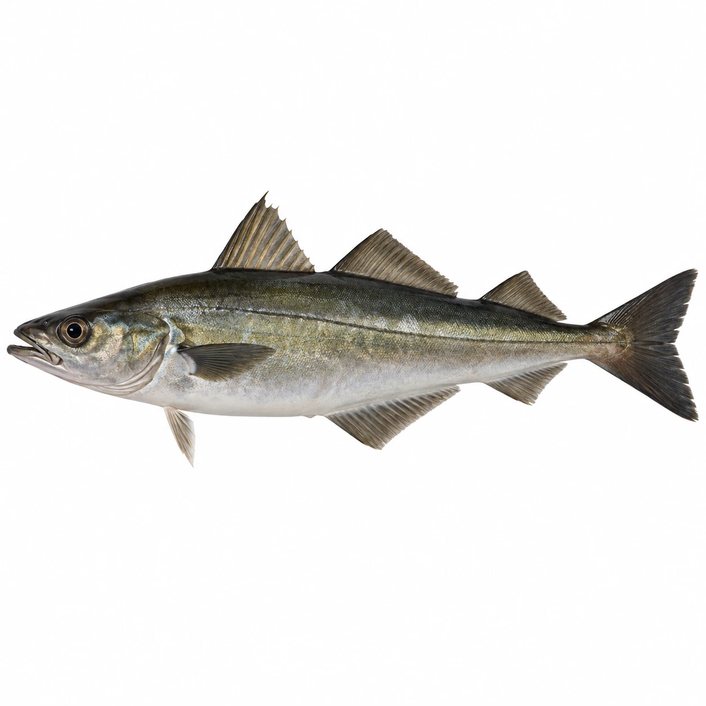
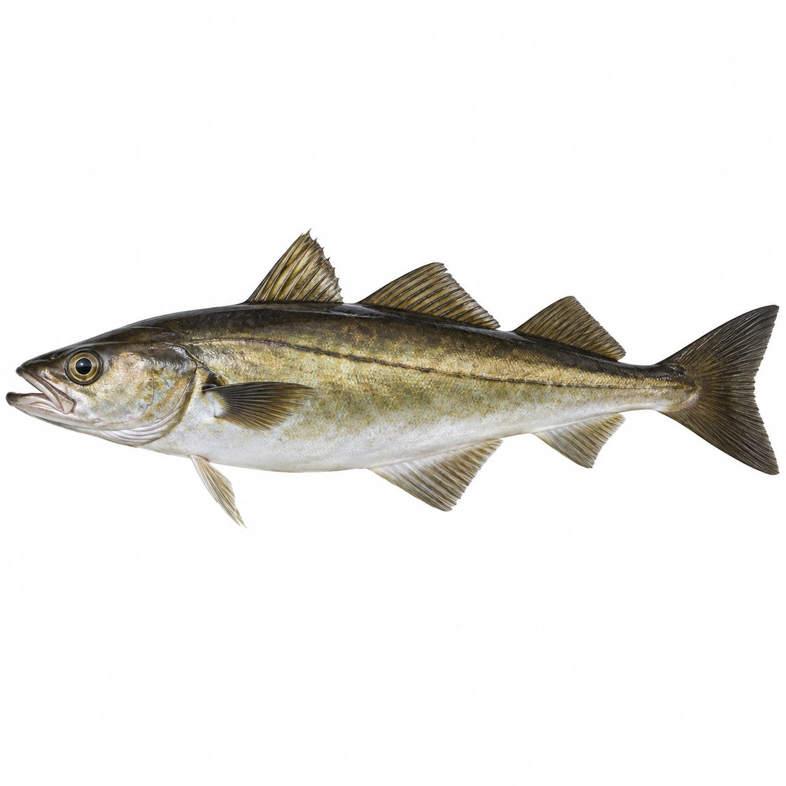
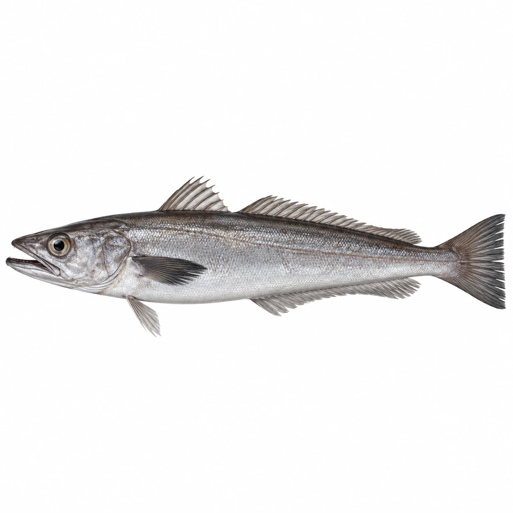
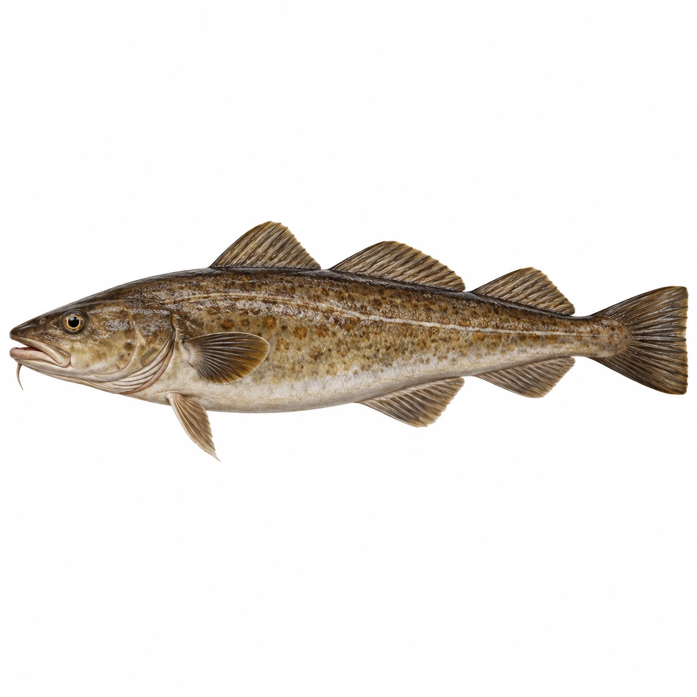
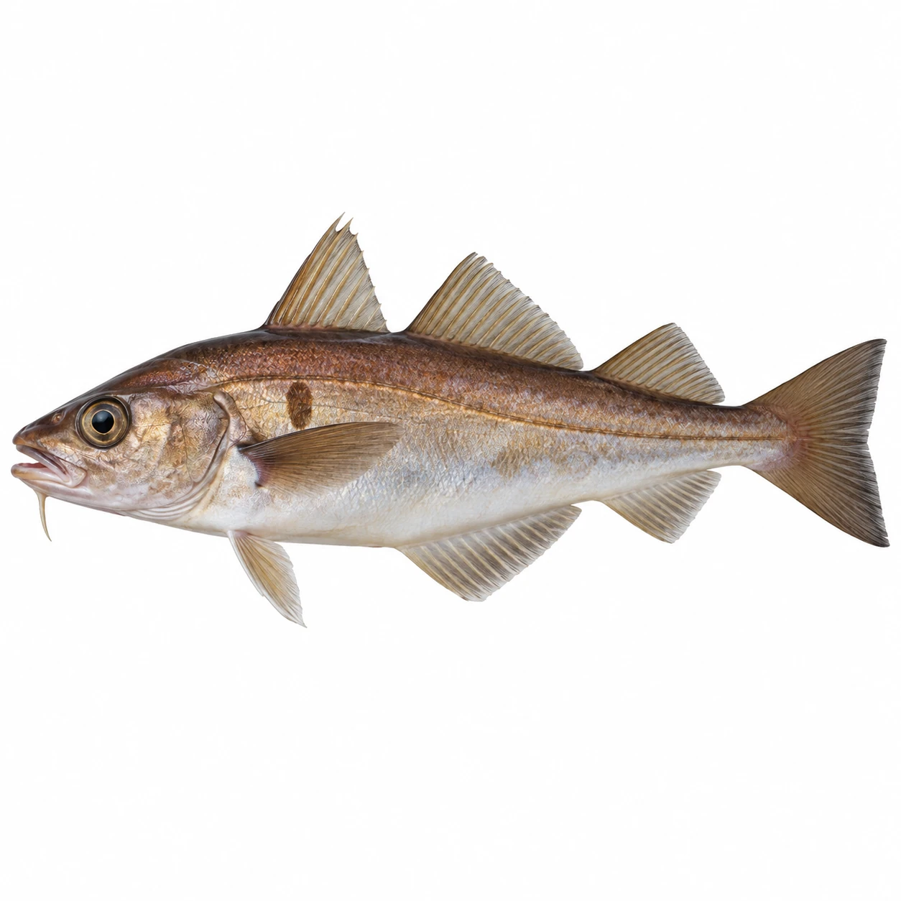
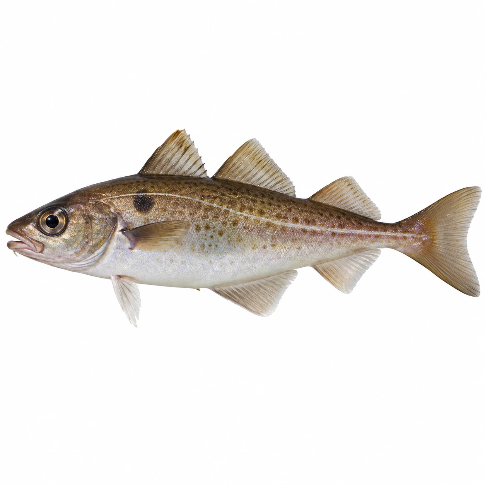
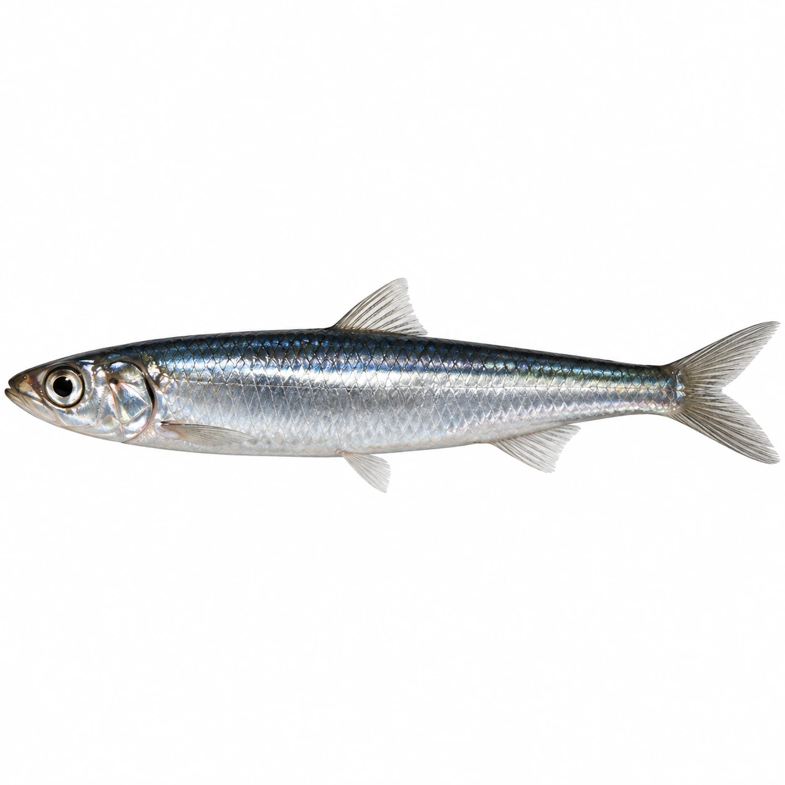
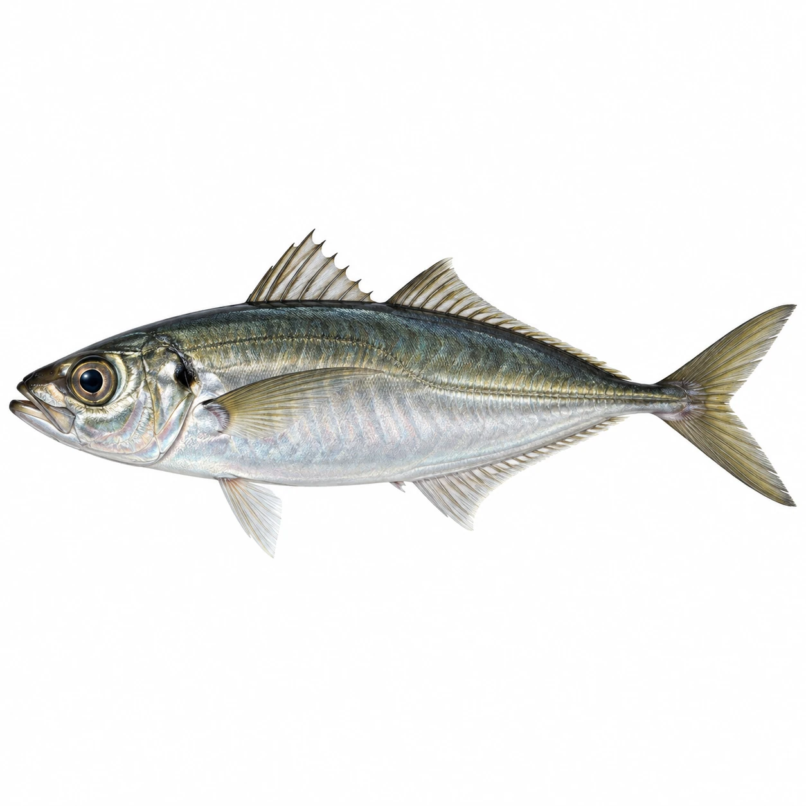

WittlingMerlangius merlangus10 neue KI-Beispielbilder auf weißem Hintergrund. Keine wissenschaftlich validierten Artfotos.

WittlingMerlangius merlangus
SchellfischMelanogrammus aeglefinus
Seelachs / KöhlerPollachius virens
PollackPollachius pollachius
SeehechtMerluccius merluccius
LengMolva molva
FranzosendorschTrisopterus luscus
ZwergdorschTrisopterus minutus
Europäische SardelleEngraulis encrasicolus
StöckerTrachurus trachurus